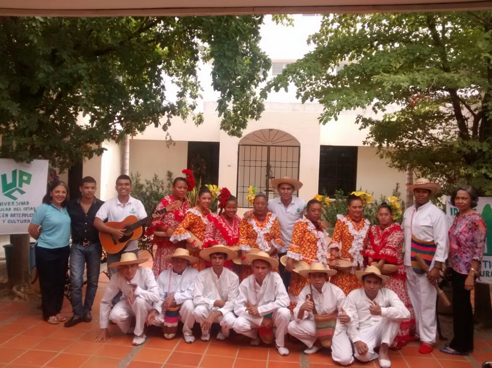

Bellas Artes
El programa de Licenciatura en Arte, Folclor y Cultura, adscrito a la facultad de Bellas Artes de la Universidad Popular del Cesar, fue creado mediante el acuerdo N° No 040 del 11 de septiembre de 2002. En marzo 16 de 2003, recibió por parte del Ministerio de Educación Nacional, la Acreditación Previa, por medio de la Resolución 1008 de marzo de 2003, iniciando sus labores el segundo semestre de 2003 con 31 estudiantes matriculados, provenientes en su gran mayoría de la antigua ESCUELA DE BELLAS ARTES. DEL CESAR. Inició con el nombre: Licenciatura en Arte y Folclor, posteriormente en el año 2011, una vez aprobado el registro calificado por los pares académicos, dentro los requerimientos estaba el introducir el folclor en la denominación del programa. Es así como queda establecido como LICENCIATURA EN ARTE, FOLCLOR Y CULTURA.
Nuestras Instalaciones
Misión
El programa de Licenciatura en Arte y Folclor, de la Universidad Popular del Cesar, forma Licenciados con competencias pedagógicas, comunicativas, tecnológicas y artísticas, mediante alianzas estratégicas con el sector educativo y cultural, que Contribuyen al crecimiento del desarrollo sostenible, con una formación integral en la docencia, la investigación y la proyección social.
Visión
El programa de Licenciatura en Arte y Folclor en el año 2016, será reconocido en el contexto regional, nacional e internacional, por su contribución en el desarrollo artístico, folclórico, creativo, investigativo y pedagógico de sus egresados, posicionando a la Universidad como el mejor espacio académico donde la cultura, la gestión y la pedagogía interactúan generando nuevos modelos de interculturalidad.
Objetivo General
Formar Profesionales Licenciados en Arte y Folclor para que hagan proyección de sus saberes en el contexto educativo y de gestión cultural, desde la acción pedagógica, artística y folclórica con excelencia académica y humanística.
Objetivos Específicos
• Ofrecer espacios académicos a los estudiantes donde adquieran los conocimientos y las habilidades fundamentales, necesarias y suficientes para formarse profesionalmente.
• Formar un profesional competente, gestor y líder de procesos culturales y artísticos en la comunidad. Insertos en su contexto histórico y social capaces de entenderlo analíticamente y expresarlo en sus acciones.
• Ofrecer un profesional en la docencia, dinamizador de programas culturales y pedagógicos, que identifique las competencias específicas en el arte y el folclor de la población estudiantil.
• Formar profesionales creativos capaces de enfrentar problemáticas culturales y artísticas, con soluciones apropiadas, traduciendo la dimensión estética y lúdica del ser humano.
• Generar espacios de capacitación formales (pregrado y postgrado) y no formales (diplomados, cátedras, foros, seminarios, talleres, cursos), para formar tejido social que desde el ejercicio y la funcionalidad de las profesiones y vocaciones inherentes a las Artes y la Cultura contribuyan a la convivencia y a la calidad de vida de la sociedad.